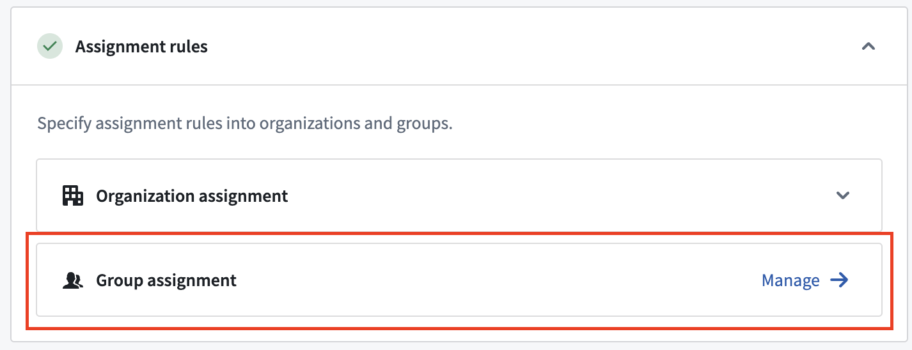
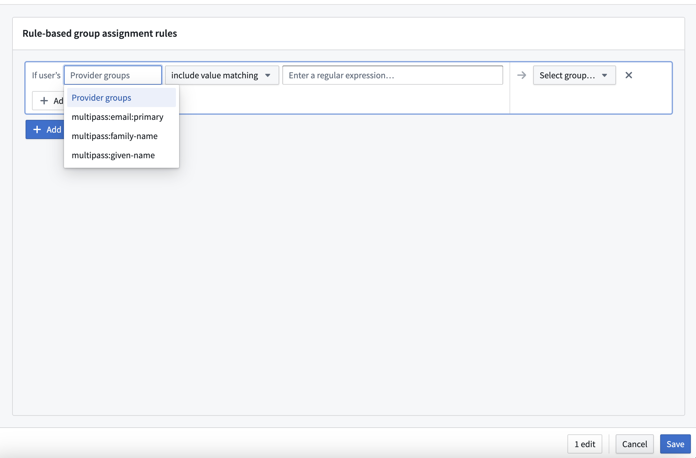
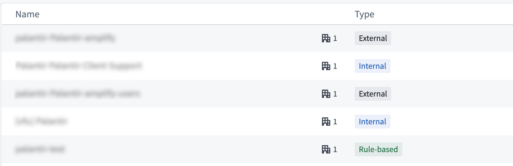
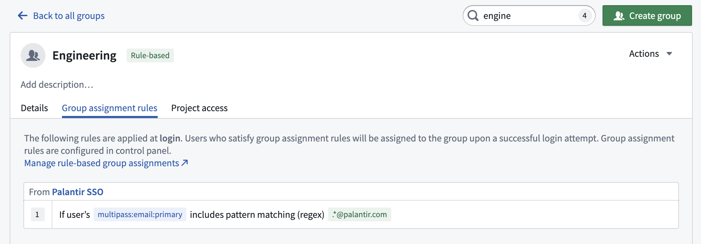
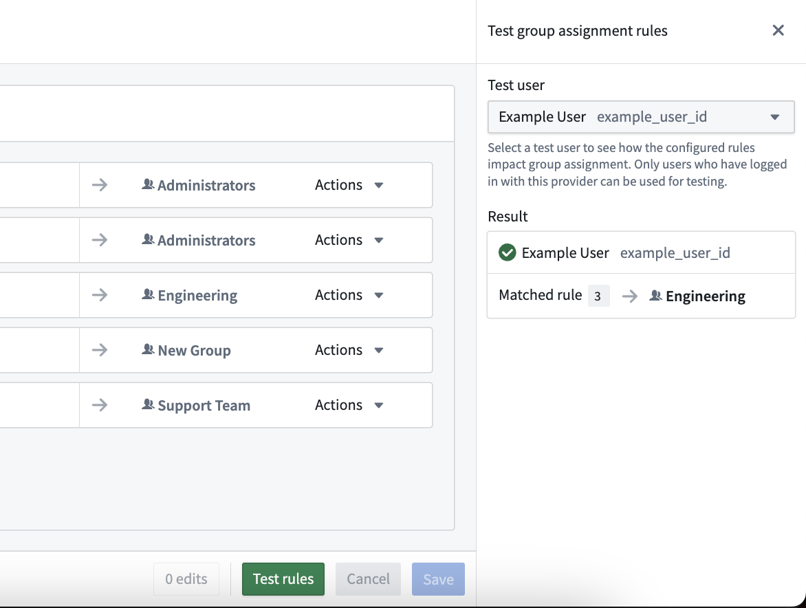

As part of setting up an authentication provider, administrators can define rule based groups. Membership to a rule based group is automatically assigned based on rules evaluated at login. These rules can be configured for each authentication provider. To set up rule based groups, navigate to Control Panel > Authentication > Authentication provider > Manage group assignment to use the group assignment editor.

Group assignment rules contain one or more AND conditions that are evaluated against user attributes or provider groups. For each rule, users who match all conditions will be assigned membership to the specified rule based group. Administrators can specify OR conditions by defining separate assignment rules applied to the same group.
Conditions use regular expression (regex) patterns for matching. Three matching options are provided:

Foundry uses three types of user groups across the platform:
Of these three group types, only rule based group membership can be defined in Foundry using the automated rules discussed here.

Rule based groups help guarantee legibility and consistency in group membership, so we recommend rule based groups over internal groups where possible. Internal groups make sense in cases of temporary access, provisional cohort creation, or specific onboarding or revocation requirements that cannot be met by an external identity provider. Because access in these cases requires a human-in-the-loop, the attribute and group conditions used by rule based groups will likely be insufficient to determine access.

admin does not match the group admin-users. Use admin.* instead.. matches any character, so the pattern team.a also matches team-a. Escape special characters that you want to match literally, as in team\.a.(?i) to the start of a pattern to make it case-insensitive, so that (?i)admin.* matches both Admin-Users and admin-users.
Some Foundry authentication setups use a legacy tool for automated user assignment called group asynchronous user manager (AUM). Group AUM does not have a user interface, it is configured by Palantir representatives at the direction of customer administrators.
Rule based groups cannot be used for customer enrollments that have group AUM enabled. In the future, group AUM rules will be automatically migrated to rule based group rules.